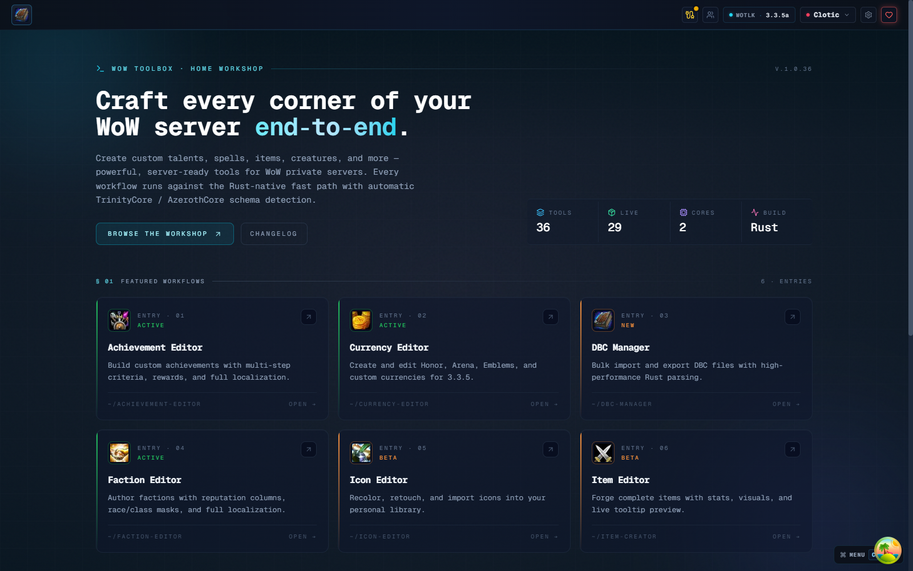
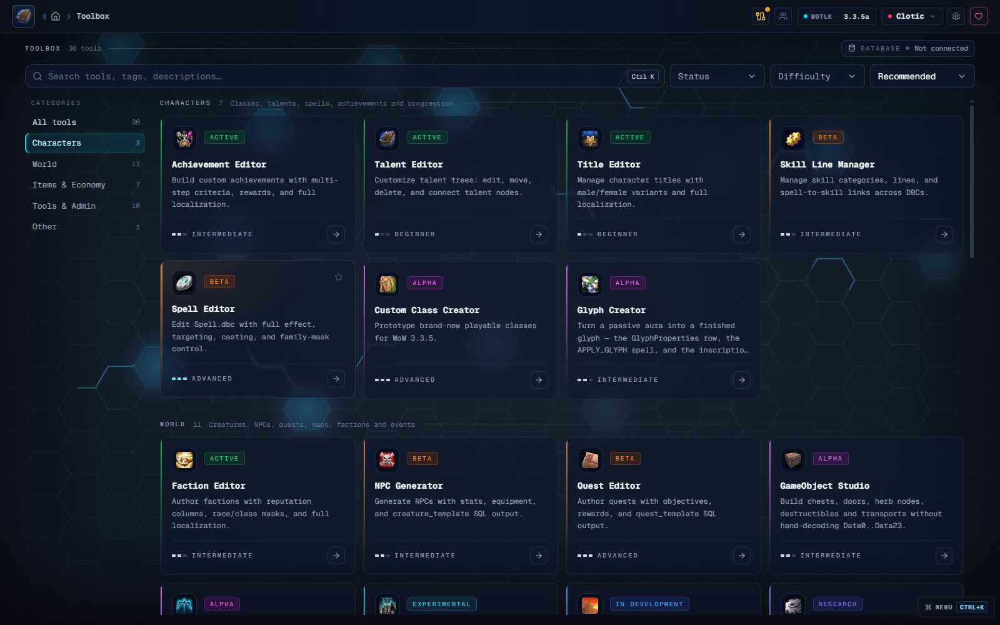
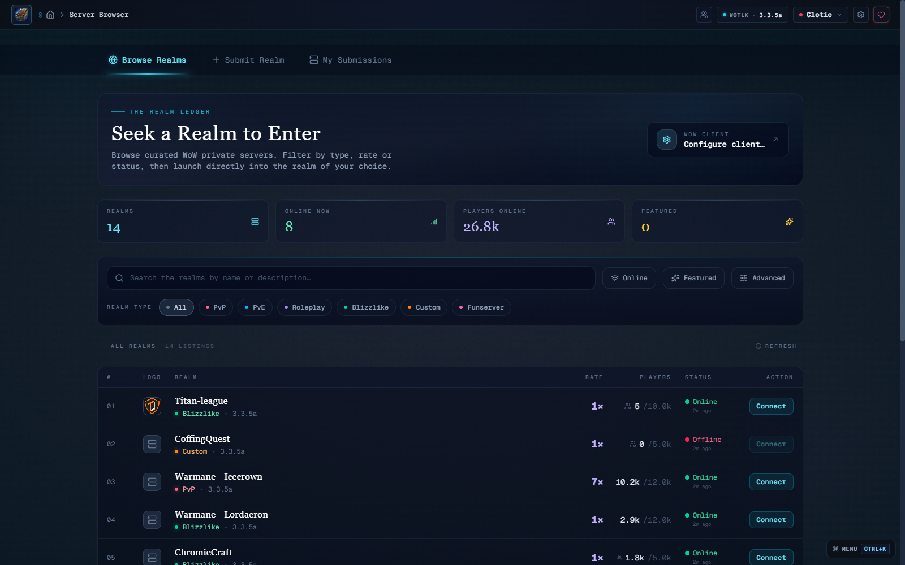
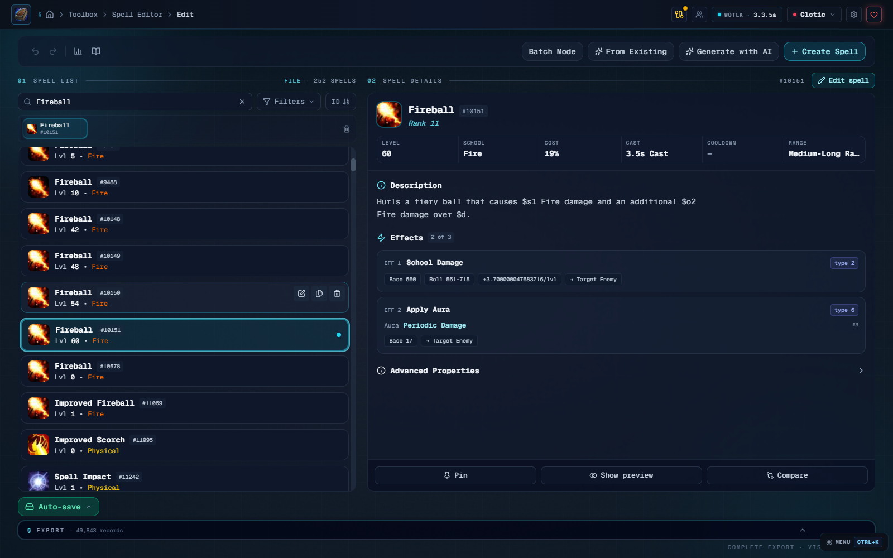
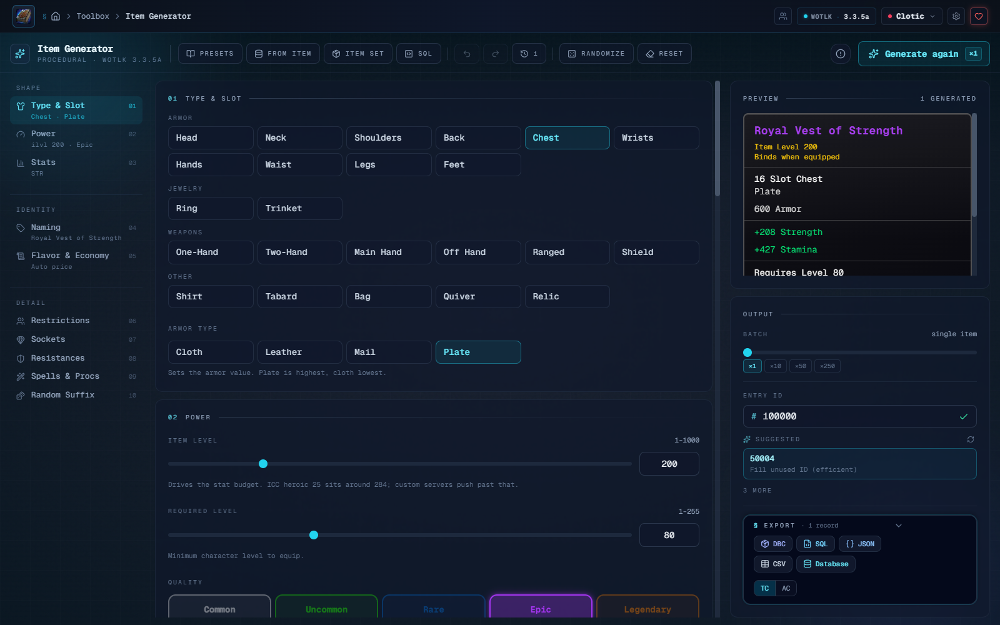
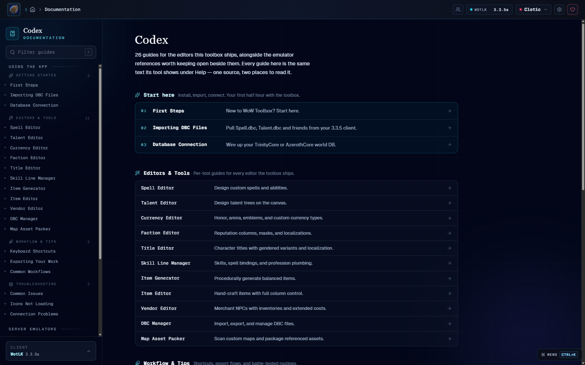
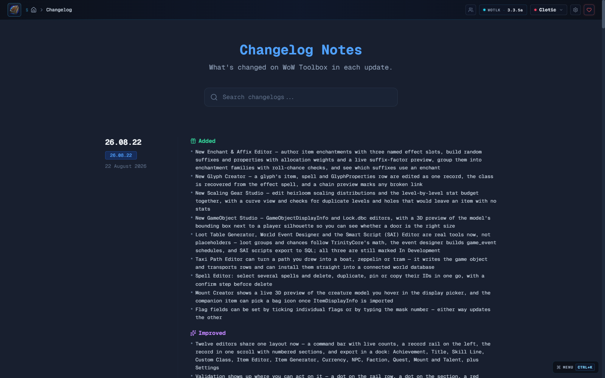

DBC parsed in Rust
Every known schema read and written natively, with typed fields validated at the form and cross-referenced against dependents.
Client 3.3.5a · WotLK
Thirty-six editors, creators and generators for World of Warcraft 3.3.5a. Terrain in a native Bevy viewport, models in Three.js, DBCs parsed in Rust, and world-database writes previewed before they run.
One window for the whole pipeline. Client data, world database, models, and delivery used to be four programs and a hex editor. Every field is typed, every write is previewed, and nothing needs a restart.
Every known schema read and written natively, with typed fields validated at the form and cross-referenced against dependents.
Six tools commit straight to the world database. The statement is shown before it runs, and the worldserver never needs a restart.
The M2 viewer renders in Three.js; the map editor runs a native Bevy viewport on wgpu, with heavy passes off the UI thread.
Items, NPCs, loot tables and vendor stock in batches of up to 250, with the tooltip shown before anything is written.
Adding one item used to cost four tools and a restart. The IDs were grepped, the DBC was patched by hand, the SQL was written blind, and the display ID was a guess you only checked at the login screen.
Thirty-six tools, one table of contents. Each tool is a sandboxed feature module. The landing screen is the index; nothing is more than two clicks from the cursor.
> select a tool for its one-line brief
What’s in the window. Eight screens out of thirty-six, straight from the app.

Featured workflows up front, every other tool a click or two from the cursor.

Achievements, Talents, Titles, Spells, Quests, Factions, Creatures, Currencies, plus the Skill Line Manager, Custom Class Creator, Enchant & Affix Editor, and an M2 Viewer. Each tool is a sandboxed feature module; the landing is the table of contents.

realmlist.wtf so you don’t.Discover, filter, and connect to private WoW realms. Pin favourites, see latency, and swap realmlists on connect. Server operators can submit their own listing with a tagline, a flag, and a Discord invite.

Spell.dbc streamed straight off your client: every effect, aura, cost and attribute on one page, with the icon and tooltip the game will actually print. Clone a rank, batch-edit a family, or export the whole file back out.
All three trees per class on one canvas, drawn from Talent.dbc and TalentTab.dbc. Move a talent, rewire a prerequisite, or start a whole new tree, and the ranks, icons and arrows stay honest.

Pick a slot, an item level and a stat spread; the generator spends the budget the way the game does and shows you the tooltip before anything is written. Export as DBC, SQL, JSON, CSV, or straight into the world DB.

Every editor documented in-app, cross-linked to emulator references. No tab-switching to a wiki: the docs live next to the fields they describe, and search is offline-first.

A searchable timeline of what shipped, broke, and got fixed, with realtime updates over Supabase. When a new build lands, the client knows; when you pin a tool to a version, it stays pinned.
Read live from the app’s own feed. The latest published entries, fetched from the same Supabase project the desktop app reads.
The release feed needs JavaScript. See the releases on GitHub.
Entries are numbered by date (YY.MM.DD). Installer builds keep their own tags on GitHub releases.
Built for the shape of this data. DBCs are fixed-width binary, world databases are relational, and models are geometry. Nothing here is a spreadsheet macro.
Checking…
Pulling release metadata from GitHub…